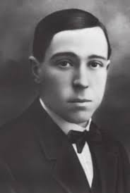
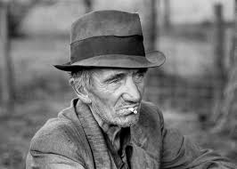

César Manrique Cabrera

Born in Arrecife, April 24, 1919 and passed away in Teguise,
September 25, 1992. Was a Spanish painter, sculptor, and artist,
known particularly for the architectural projects in which he
participated as artistic director. He combined his work with the
defense of the environmental values of the Canary Islands. He
sought harmony between art and nature as a creative space. He
received, among others, the World Prize for Ecology and Tourism
and the Europa Prize.
Jesús del Carmen Soto
He was born in Antigua, Fuerteventura, on December 25, 1928, and
died in Arrecife, Lanzarote, on May 4, 2003. He was a Spanish
landscape architect and construction consultant. He lived most of
his life in Lanzarote. From 1968, Soto worked closely with César
Manrique; together they were key figures in the island's
development. While Manrique's name is well-known, Soto is almost
forgotten. He was reluctant to seek the spotlight, as he was a
modest man who did his work quietly and did not speak to the
press. A permanent exhibition of his work was established at
Jameos del Agua at the end of 2017.
José Molina Orosa

He was born in Arrecife on December 18, 1883, and died there on
January 18, 1966. He was a Spanish physician who practiced
medicine throughout his life on the island of Lanzarote during the
20th century. After declining an offer of a position as physician
at the Spanish Embassy in Paris, he settled in Arrecife to
practice as a family doctor. At that time, resources were scarce,
and he relied on the help of the few doctors and medical
practitioners on the island. In October 1913, he founded the
School of Arts and Crafts, becoming its first director.
Estanislao González Ferrer

He was born in Lanzarote in 1930 and died there in September 1990.
He was a Spanish botanist, an expert on the flora of the Canary
Island of Lanzarote. An endemic flower of the island was
discovered by his students, with whom he often went out into the
field to study and document species in situ, and named in his
honor: Helianthemum gonzalezferreri.
Yonathan de León Machín
Current mayor of Arrecife (since July 2023), noted for being the
youngest mayor in the city's history.
Hecher Sosa
Born in Arrecife, Lanzarote, on August 25, 1995, and better known
as Hecher Sosa, he is a Spanish mixed martial artist. He currently
competes in the bantamweight division of the Ultimate Fighting
Championship (UFC), being the first Spaniard to enter the
promotion through Dana White's Contender Series. Previously, he
was the bantamweight champion of Fight Club Rush and The Way of
Warriors FC.
Manolo 'el del bombo'

He was known for attending every match the Spanish national team
played around the world, both friendly and official games, wearing
his national team jersey, his enormous beret, and carrying his
signature bass drum. It was very common to see him in scenes that
focused on the crowd at any Spanish national team match. He also
cheered on the Spanish basketball team during some of the
EuroBasket 2007 games held in Spain.
La Pantera
Sergio Aimar Castellano known artistically as "La Pantera", he is
a Spanish singer, songwriter, and rapper born in Lanzarote on
December 14, 1999. La Pantera has earned a place in the Spanish
music scene for his performing talent, his personality, and his
skill in writing lyrics. He is known for his humility and has
achieved a successful position in his country's music scene.
Throughout his career, he has accumulated over 500 million streams
on platforms like Spotify and has collaborated with other
prominent artists, including Quevedo, Juseph, Lucho RK, and Cruz
Cafuné, among others.
Note: Information about these personalities comes from Wikipedia.